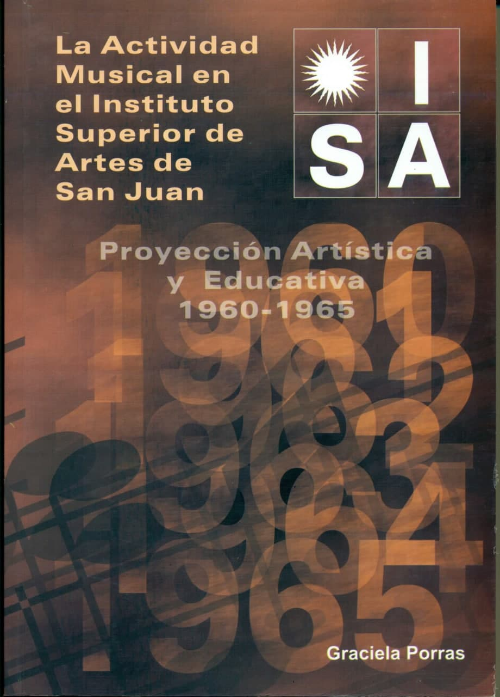

Publicación de Graciela Beatriz Porras como resultado de su tesina de grado para obtener el título de
Licenciada en Educación Musical del Departamento de Música (FFHA, UNSJ), dirigida por Fátima Graciela
Musri en el marco del Proyecto Reconstrucción de los espacios socio-musicales en San Juan (1944 - 1970).
El libro se editó por en EFFHA (Editorial de la Facultad de Filosofía, Humanidades y Artes) en 2006.
Recupera la historia del Instituto Superior de Artes, dependencia de jurisdicción provincial, que marcó
una etapa significativa en la vida cultural de San Juan y que fue una institución innovadora en el campo
de la educación artística. En sus diferentes especialidades artísticas se formaron docentes y creadores
en artes visuales, música, teatro y danza de trayectorias relevantes para la provincia. Fue el
antecedente inmediato del actual Departamento de Música de la Universidad Nacional de San Juan, en cuyo
seno nacieron los organismos corales e instrumentales que originaron los actuales coros y orquesta
sinfónica universitarios.
CONTACTO
gem@ffha.unsj.edu.ar